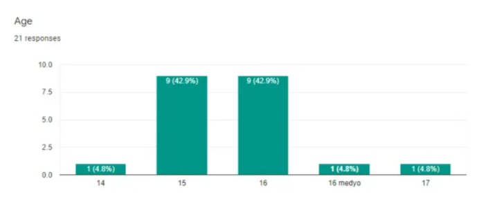
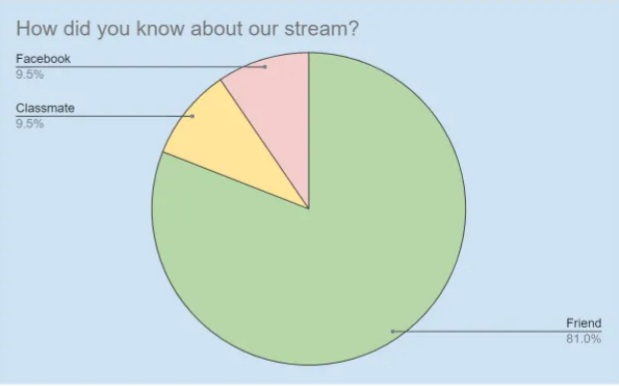
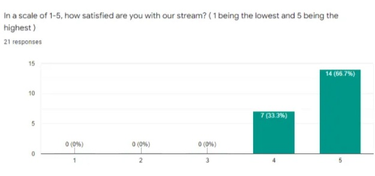
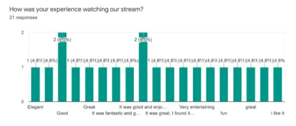
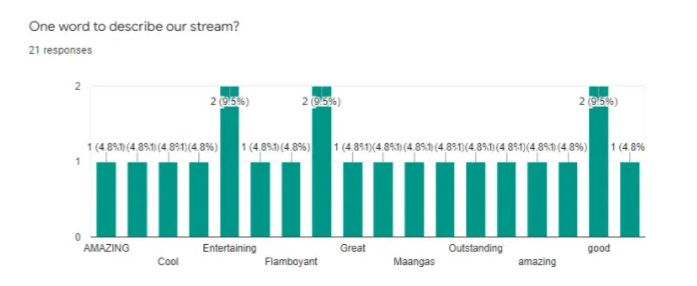
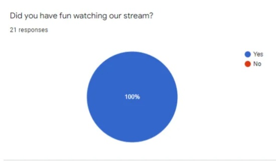

According to the result of our feedback survey, we were able to gather 21 respondents from the people who watched our live stream. It says that our viewers are mostly from 14 yrs old to 18 years old. Based on the survey, 4.8% (1) says that they are 14 years old. While 42.9% (9) say that they are 15 years old. And, 47.9% (10) say that they are 16 years old. Lastly, 4.8% (1) says that they are 17 years old.

Based on the information we’ve gathered through a survey, 81% (17) of our respondents, majority of them heard about our stream from their friends. There are also 9.5% (2) of our respondents heard from their classmates. And, 9.5% (2) of our respondents claimed that they heard about our stream on their Facebook accounts.

The next question asks about how satisfied our respondents were with our stream. 33.3% (7) of our viewers said that out of 5, they would rate our stream as 4. While 66.7% (14) the majority of our respondents said that they are very satisfied with our stream.

The respondents’ answer to the question how their experience watching the stream really moved us. Most of the answers state that they really enjoyed the stream and they think that our stream was good. 100% (21) of the respondents experienced a positive outcome during our stream.

The next question, we asked them which part of the stream they enjoyed the most. 28.57% (6) of those who answered our survey said that what they liked the most was the game we were playing. While 71.43% (15) of our respondents said that they enjoyed everything that was included on the stream.
What we asked them next was what part of the stream they enjoyed the least. 76.19% (16) answered none. While 14.29% (3) of our respondents answered that what they enjoyed the least was the lag. Moving forward, 9.52% (2) of the respondents answered that the waiting time was what they enjoyed the least.
The next question on our survey was what is one word that best describes our stream. 100% (21) respondents gave us a positive response and most of the adjectives they used were to compliment us and our stream.

The second to the last question we asked our respondents is what are their recommendations on how we can improve our stream. The number of respondents who think that we don’t need to improve our stream any more is 66.67% (14). Internet connection is something that we need to improve on based on 19.05% (4) respondents. While 4.76% (1) of our respondents responded that we should try to lessen the waiting time next live. 9.52% (2) of the people who answered our survey said we needed to improve our frame rate.
The last question we asked them was if they enjoyed our stream. 100% (21) of them responded yes.
